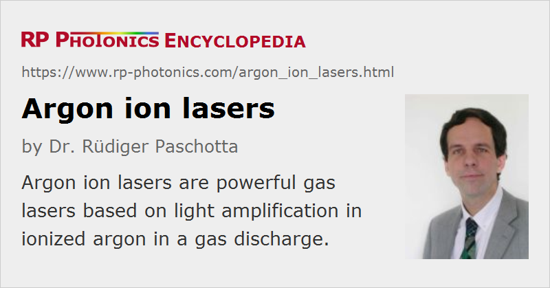

Argon Ion Lasers
Definition: gas lasers based on light amplification in ionized argon in a gas discharge
More general term: gas lasers
German: Argon-Ionen-Laser
How to cite the article; suggest additional literature
Author: Dr. Rüdiger Paschotta
Argon ion lasers are powerful gas lasers, which typically generate multiple watts of optical power in a green or blue output beam with high beam quality.
The core component of an argon ion laser is an argon-filled tube, made e.g. of beryllium oxide ceramics, in which an intense electrical discharge between two hollow electrodes generates a plasma with a high density of argon (Ar+) ions. A solenoid around the tube (not shown in Figure 1) can be used for generating a magnetic field, which increases the output power by better confining the plasma.
A typical high-power argon ion laser, containing a tube with a length of the order of 1 m, can generate 10 W or 20 W of output power in the green spectral region at 514.5 nm, using several tens of kilowatts of electric power. (The voltage drop across the tube may be 100 V or a few hundred volts, whereas the current can be several tens of amperes.) The dissipated heat must be removed with a water flow around the tube; a closed-circle cooling system often contains a chiller, which further adds to the power consumption. The total wall-plug efficiency is thus very low, usually below 0.1%.
There are smaller air-cooled argon ion lasers, generating some tens or hundreds of milliwatts of output power from several hundred watts of electric power.
The laser can be switched to other wavelengths such as 457.9 nm (blue), 488.0 nm (blue–green), or 351 nm (ultraviolet) by rotating the intracavity prism (on the right-hand side). The highest output power is achieved on the standard 514.5-nm line. Without an intracavity prism, argon ion lasers have a tendency for multi-line operation with simultaneous output at various wavelengths.
There are similar noble gas ion lasers based on krypton instead of argon. Krypton ion lasers typically emit at 647.1 nm, 413.1 nm, or 530.9 nm, but various other lines in the visible, ultraviolet and infrared spectral region are accessible.
Other types of ion lasers are mentioned in the article on gas lasers.
Applications
Multi-watt argon ion lasers can be used e.g. for pumping titanium–sapphire lasers and dye lasers, or for laser light shows. They are rivaled by frequency-doubled diode-pumped solid-state lasers. The latter are far more power efficient and have longer lifetimes, but are more expensive. Argon tubes have a limited lifetime of the order of a few thousand hours. An argon laser may thus be preferable if it is used only during a limited number of hours, whereas a diode-pumped solid-state laser is the better solution for reliable and efficient long-term operation.
Laser safety issues arise both from the high output power of typical ion lasers and from the high voltage applied to the tube.
Suppliers
The RP Photonics Buyer's Guide contains 22 suppliers for argon ion lasers. Among them:
Questions and Comments from Users
Here you can submit questions and comments. As far as they get accepted by the author, they will appear above this paragraph together with the author’s answer. The author will decide on acceptance based on certain criteria. Essentially, the issue must be of sufficiently broad interest.
Please do not enter personal data here; we would otherwise delete it soon. (See also our privacy declaration.) If you wish to receive personal feedback or consultancy from the author, please contact him e.g. via e-mail.
By submitting the information, you give your consent to the potential publication of your inputs on our website according to our rules. (If you later retract your consent, we will delete those inputs.) As your inputs are first reviewed by the author, they may be published with some delay.
Bibliography
| [1] | W. B. Bridges, “Laser oscillation in singly ionized argon in the visible spectrum”, Appl. Phys. Lett. 4, 128 (1964), doi:10.1063/1.1753995; erratum: Appl. Phys. Lett. 5, 39 (1964), doi:10.1063/1.1754038 |
| [2] | O. Svelto, Principles of Lasers, Plenum Press, New York (1998) |
See also: gas lasers, green lasers, visible lasers, gas discharge lamps
and other articles in the category lasers
|  |
If you like this page, please share the link with your friends and colleagues, e.g. via social media:
These sharing buttons are implemented in a privacy-friendly way!